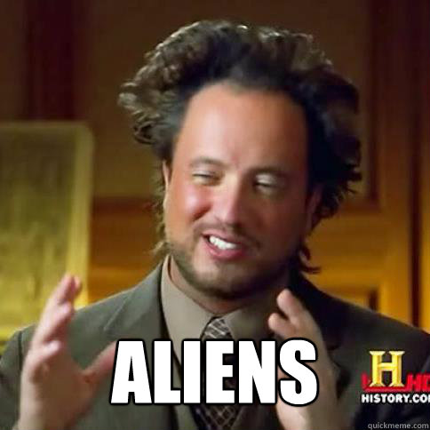
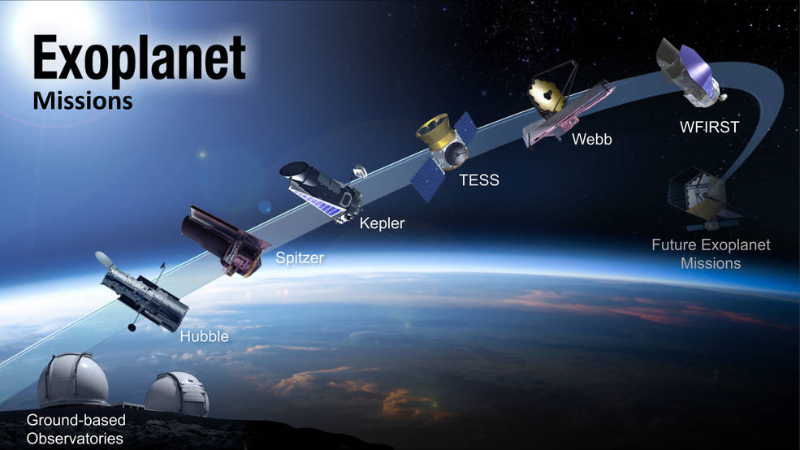
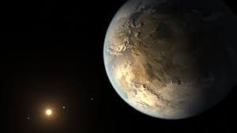

The three words selected for this project were funding, exoplanets and SETI, short for Search for Extraterrestrial Intelligence. The purpose of the project is to find out if the announcement of the discovery of exoplanets, has led to an increase in the publication of articles regarding the funding for the search for extraterrestrial intelligent ventures, between the period 1999-2017.
Sebastián Hurtado
MALD Candidate | The Fletcher School - Tufts University | Applied Data Visualization - MIT Media Lab
Looking for ET

From the 100,291 articles published in The Guardian since 1999, only 214 reference SETI, 112 reference exoplanets, 13 articles mention Funding & SETI together, Funding & Exoplanets are mentioned together in 9 articles, and only 8 articles refer to Exoplanets & SETI together. It is reasonable to assume that within the information provided by The Guardian, the announcement of the discovery of Exoplanets has not had major impact in the reporting of funding activities to SETI. However, it would be interesting to research if the discovery of exoplanets has led to an increase in the funding for other “search for extraterrestrial intelligent ventures”.
Where is ET?

SETI
Discovery

Exoplanets

Looking for ET
From the 100,291 articles published in The Guardian since 1999, only 214 reference SETI, 112 reference exoplanets, 13 articles mention Funding & SETI together, Funding & Exoplanets are mentioned together in 9 articles, and only 8 articles refer to Exoplanets & SETI together. It is reasonable to assume that within the information provided by The Guardian, the announcement of the discovery of Exoplanets has not had major impact in the reporting of funding activities to SETI. However, it would be interesting to research if the discovery of exoplanets has led to an increase in the funding for other “search for extraterrestrial intelligent ventures”.